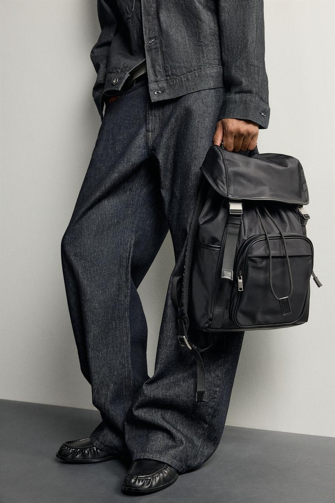
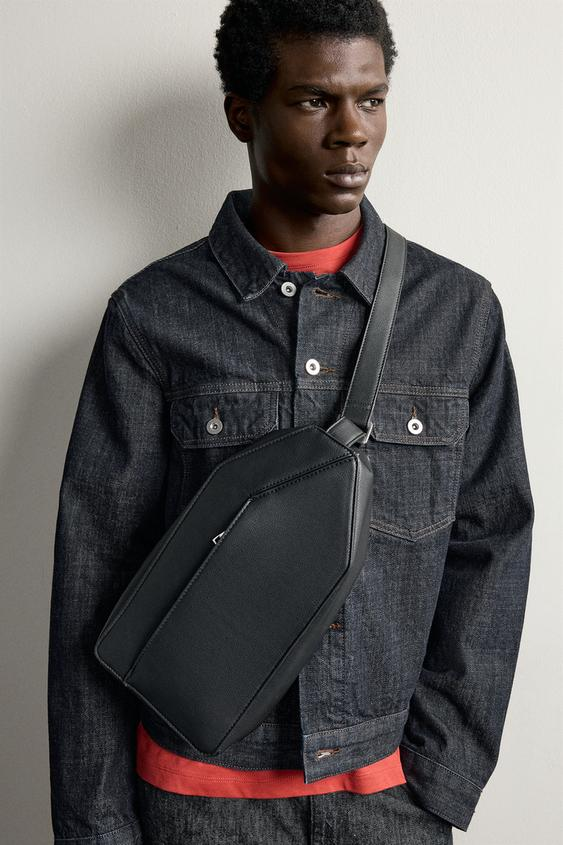
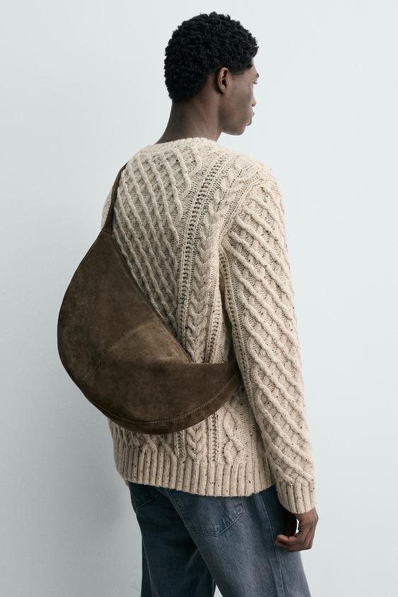

一套衣服已经穿好，背上包之后，肩膀、前襟与身体侧面的轮廓仍会改变。包的作用不仅是收纳：宽肩带可以把一件简洁上衣分成几块，大包会增加侧面的体积，细薄公文包则能留下较清楚的衣服边缘。
男士包袋也不必只在“实用的双肩包”和“正式的公文包”之间二选一。参考 ZARA 的几款商品与官方造型，可以把选择拆成两步：先解决每天带什么、怎样移动，再判断包的形状、材质与背法怎样进入整套穿搭。这样既能谈功能，也能看清风格来自哪里。
双肩包：收纳之外，先看它怎样形成体积

图1：拼接材质双肩包与深色牛仔套装。图片来源：ZARA 商品页，款号 3228/820/800。图中展示手提状态。
这只包的高、横向长度与厚度为 44 × 29 × 13 厘米。翻盖、两条扣带、抽绳与凸起的前袋，把包面分成几个可辨认的部分。黑色减少了颜色之间的分散，但这些构件仍在，所以它的功能感并未因全黑而消失。
照片把它放在深色牛仔外套与宽裤旁边。衣服已有清楚车线与较大的裤腿，包的接缝和袋体延续了这种结构；它的表面又比牛仔布平滑，两种黑灰材料没有完全融成一片。搭配的联系来自颜色、分量与表面之间的关系，无需把这套造型解释成某种固定身份。
值得注意的是，图中包被提在腿侧。这个状态留下了完整前襟，也把包的高度直接放到裤腿旁边；真正双肩背起后，体积会移到背后，肩带也会压在外套肩部。不能把手提造型的效果，直接当成背上身后的效果。
如果通勤需要带电脑和较多物品，双肩结构通常比单手长期提着更容易分担负重，但具体舒适度仍取决于背带、包体、总重量与调整。选外观简洁、厚度较薄的双肩包，可以减少背部的突出；多口袋与织带则提供更多外部细节。两者适合不同需求，不存在所有工作场合都应该换成公文包的结论。
这款官方列出加垫背部、可调肩带及行李箱固定带，但没有据此证明防水、登山或专业器材保护能力。商品名中的“尼龙”也不代表整只包只有一种纤维；成分表列出聚酰胺、聚酯纤维与聚氨酯等不同部分，使用性能仍需看具体结构与说明。
竖向斜挎包：包小一些，前襟未必更安静

图2：竖向纹理斜挎包与牛仔夹克。图片来源：ZARA 商品页，款号 3517/820/800。
这款包的尺寸是 32 × 17 × 7.5 厘米。横向只有17厘米，包身却较长，背在前面时呈现细长的面。斜肩带与包体连在一起，切过夹克胸前的口袋和门襟，使原本较规则的牛仔服装出现另一组方向。
它并不是“因为小，所以几乎没有存在感”。黑色包面、清楚的包边与靠近胸腹的位置，都使它容易被看见。图中红色内搭从领口与夹克下摆露出，两处红色与中央的深色包体共同形成层次；如果把包移到侧面，这一段胸前关系也会改变。
竖向包适合怎样的物件，应从包口与内部净空间核对。外部高32厘米，不等于能顺利放进同样长的物品；拉链开口、内袋和底部转角都可能影响取放。只带手机、证件与少量随身物品时，小包可以避免把外套和裤袋塞得鼓起；需要水杯或较大设备时，就不应仅为外形勉强压缩需求。
肩带长度决定包落在胸前、腹前还是胯侧。短一些时包更靠近上身，但也可能挤压领口、挂住外套；长一些则容易与下摆重叠，走动时的摆幅也需留意。先调整再判断，往往比直接说“斜挎包不适合西装”更具体。
如果衣服已同时有胸袋、醒目纽扣、领带或围巾，应观察肩带穿过哪一部分，是否挡住希望保留的细节。将包放到侧后方可以减少胸前遮挡，却会改变取物便利性。这里涉及的是形状与使用的取舍，而不是某一种背法天然更成熟。
宽肩包：曲线、绒面与针织怎样配合

图3：皮革肩包与麻花针织衫。图片来源：ZARA 商品页，款号 3503/720/032；官方色名为卡其绿，图中受拍摄条件影响呈偏褐的低饱和颜色。
这只肩包高24厘米、横向长50厘米、厚9厘米。它比前一款斜挎包横向长得多，但袋体不是一个完全挺直的长方块：包口顺着肩带下落，底部形成弧线，宽度通过柔软形状贴近身体。
背面的观看角度很有帮助。包从肩部向下包住一片背侧，弧形边缘与毛衣的圆润体积衔接。毛衣表面有密集麻花纹理，包面则以较大、连续的绒面区域回应它。两者都有表面变化，但变化的尺度不同，所以能看出层次，而不只是把纹理越堆越多。
米色针织、低饱和的包与蓝色牛仔裤之间，颜色有区别，却没有强烈反光。这样的组合可以呈现较柔和的日常感。若假设把包换成同样大小、边缘挺直的亮面黑包，轮廓与高光会更清楚，背部这段连续的弧形也可能减弱。差别来自形状、表面与颜色的共同改变，不宜只归结为“棕色更休闲”。
官方成分列出猪皮，表面为剖层绒面效果；不能把“绒面”一概写成某一种动物皮，也不能只凭图片判断手感与耐水性。日常使用还要阅读护理标签，留意深浅衣物之间的接触；照片能够说明搭配关系，不能替代耐磨或掉色测试。
这类大肩包与托特也应分开看。托特通常保留更明确的提手、开口与袋身关系；图中肩包让肩带与袋体连成较长曲线。两者都可能装得较多，但背上身后的形状、提拿方式和开口位置不同。“大包”只是尺度描述，尚未说明结构。
公文包：较薄的侧面，怎样留下衣服的线条

图4：纹理公文包与灰色衬衫、长裤。图片来源：ZARA 商品页，棕色款号 3401/820/700。
这款包为 30 × 40 × 7 厘米，正面面积并不小，但侧面较薄。图中手提包没有横穿身体的长带子，衬衫领口、前襟、腰带与裤子的竖向褶线因此保持完整。公文包的整齐感，一部分来自明确的包边，另一部分来自它与穿着方式的配合。
灰色衬衫和长裤已经在颜色与线条上相互连接，深棕包只增加一块较集中的暗色。它与腰带、鞋的深色分量有联系，但并不需要每件都使用完全相同的棕色。若衣服本身更加宽松、带有明显运动细节，这只包会形成不同的对比，不能靠换包就把整身衣服自动变成商务装。
官方说明棕色款带有适用于最大13英寸笔记本的隔层。这是该具体款式的标注，不应推广成“外部长40厘米的包都能放13英寸电脑”，也不能保证每台13英寸电脑连保护套都能放下。设备的实际长宽厚度、包口与隔层尺寸才是进一步核对的对象。
侧面较薄有助于减少突出，也限制了容纳厚物件的空间。若把水杯、充电器与衣物强行塞进扁平包里，包面可能鼓起，原先看中的清楚边缘就会变化。对常常携带较多物品的人，大托特或双肩包可能更符合实际；重要的是装满之后的状态，而不是空包照片中的整齐。
此外，这款外层主要材料为聚氨酯，不能因商品有纹理、形似皮革便称为真皮公文包。造型类别与材质是两项独立信息，价格、寿命和护理也不宜由外观直接推断。
把尺寸放在一起看，区别会更清楚
以下数字都按高、正面横向长度、侧面厚度排列，单位为厘米；它们是官方外部尺寸，并非内部净容量。
| 案例 | 高 × 横长 × 厚 | 主要形状差别 |
|---|---|---|
| 拼接双肩包 | 44 × 29 × 13 | 较高，前袋与翻盖形成多个体积 |
| 竖向斜挎包 | 32 × 17 × 7.5 | 横向较窄，背在前方仍有明显长度 |
| 绒面皮革肩包 | 24 × 50 × 9 | 横向展开，弧形袋体随背法改变 |
| 棕色公文包 | 30 × 40 × 7 | 正面较宽，侧面较薄，边缘清楚 |
比较时，“大”至少有三种意思：正面占的面积大，侧面厚，或者真的能放入较多东西。它们并不等同。弧形包、带衬垫的包和扁平公文包，不能仅凭三个外部数字计算可用升数。软包还会随装载下坠，静物尺寸也不足以还原背在身上的样子。
让包与鞋、腰带和其他配饰分工
鞋包同色可以减少搭配变量，但不必连肩带、腰带、表带都精确配成一套。先观察整体以深色还是浅色为主，再看包是其中的大色块，还是只增加少量变化，通常更容易判断。
图3已经有毛衣纹理与大弧形肩包，若再增加很亮的金属饰品、强对比围巾，关注点会继续增加；想保留柔和连续的感觉，可以减少其中一项变化。图2则有明确的红色内搭，黑包与深灰牛仔布让红色仍有可辨认的位置。这些都是注意力的安排，不是男士只能使用黑、棕、灰的限制。
包上的五金、拉链、织带也属于配饰语言。多扣带与多外袋会使表面更繁忙，光滑包面与较少构件会留下更大的连续区域。与衣服搭配时，可以选择呼应，也可以有意识地形成差异；关键是知道究竟增加了什么，而不是把所有细节都称作“高级感”。
实际选择时，先列每天必须携带的物品，再用常穿的外套试背：看肩带是否压住领子、正面是否挡住口袋、侧面是否鼓起，走动与坐下时是否方便。若同一只包还要用于见客户、骑车与短途旅行，应明确最常发生的场景，不必要求一个款式在所有条件下都保持同样的外观与便利。
包可以成为整身穿搭的重要形状，也可以尽量退到衣服后面。先决定它要承担多少收纳与视觉分量，再选择结构、尺寸、颜色和背法，通常比从“哪种包最有品位”开始更有帮助。
资料
商品信息依据文中四个 ZARA 官方商品页及对应成分信息，查阅日期为2026年10月30日；同款不同颜色的隔层规格可能不同，页面也可能更新或下架。图片归 ZARA／相应权利人，本文用于具体款式与造型分析；不表示另获品牌授权。本文未进行实物容量、舒适度或材料性能测试。延伸阅读：《男士配饰：基础款中的个人风格》。